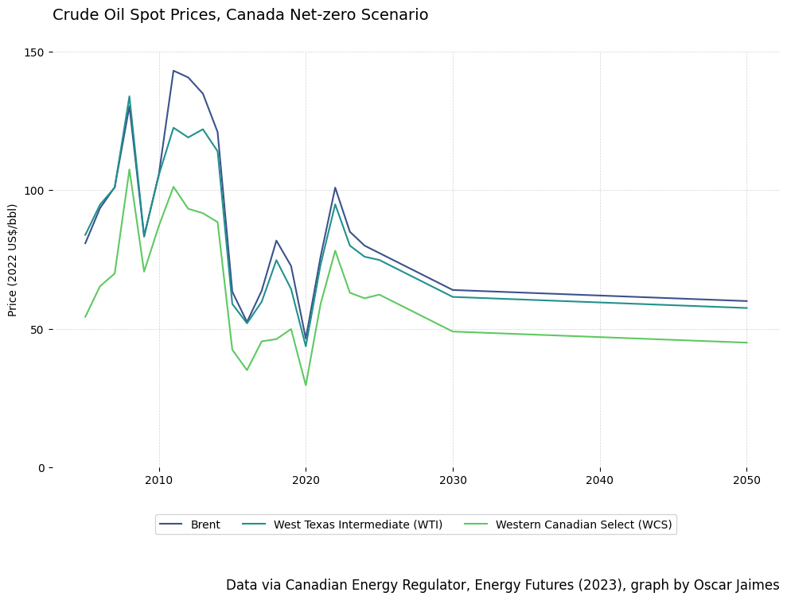

Code
import pandas as pd
import seaborn as sns
import numpy as np
import requests
from matplotlib import pyplot as plt
from datetime import datetime
from io import BytesIO
Name: Oscar Jaimes
ID: 1576326
Course: ECON366
import pandas as pd
import seaborn as sns
import numpy as np
import requests
from matplotlib import pyplot as plt
from datetime import datetime
from io import BytesIO'''
Dataset Information
---------------------
Canada’s Energy Future 2023: Energy Supply and Demand Projections to 2050 - benchmark-prices-2023
'''
DATA_URL = 'https://www.cer-rec.gc.ca/open/energy/energyfutures2023/benchmark-prices-2023.csv'
benchmark_prices = None
# fetch data from GOC and load it into pandas dataframe
response = requests.get(DATA_URL)
with BytesIO(response.content) as data:
benchmark_prices = pd.read_csv(data)
# Filter out unwanted column
benchmark_prices.drop('Unnamed: 0', axis=1, inplace=True)def format_table(dataframe, title, width):
'''
Formats a dataframe and returns a styled pandas table
'''
table = dataframe.style \
.set_caption(title) \
.hide(axis="index") \
.format(precision=2) \
.set_properties(**{'width': width, 'text-align': 'center'}) \
.set_table_attributes("style='width: 100%'") \
.set_table_styles([
{
'selector': 'th',
'props': [('text-align', 'center')]
},
{
'selector': 'caption',
'props': [('text-align', 'center'), ('font-size', '16px')]
}])
return table
def create_line_graph(data, x, y, hue, title, y_label, caption, yticks, subtitle='', grouping=False, group_name='', legend_n_cols=1) -> None:
'''
Creates and shows a line graph based on the above parameters.
This function will create a line graph based on any arbritrary data.
'''
palette = sns.color_palette("colorblind", n_colors=data[hue].nunique())
set_figure_size(grouping)
plot_line(data, x, y, hue, grouping, group_name, palette)
set_title_and_subtitle(title, subtitle)
set_axes(y_label, yticks)
style_legend(grouping, legend_n_cols)
add_caption(caption, grouping)
set_grid_and_display()
def plot_line(data, x, y, hue, grouping, group_name, palette):
'''
Handles the plotting of lines on the graph, accounts for grouping scenarios
'''
if grouping:
sns.lineplot(data=data, x=x, y=y, hue=hue, style=group_name, dashes=True, palette=palette)
else:
sns.lineplot(data=data, x=x, y=y, hue=hue, palette=palette)
def set_figure_size(grouping):
'''
Sets the figure size based on grouping
'''
if grouping:
plt.figure(figsize=(10, 7))
else:
plt.figure(figsize=(10, 5))
def set_title_and_subtitle(title, subtitle):
'''
Inserts title and subtitle elements into the graph
'''
plt.gca().text(0, 1.07, title, transform=plt.gca().transAxes, fontsize=14, verticalalignment='bottom', ha='left')
if subtitle:
plt.gca().text(0, 1.05, subtitle, transform=plt.gca().transAxes, verticalalignment='top', ha='left')
def set_axes(y_label, yticks):
'''
Formats the axes on the graph
'''
plt.ylabel(y_label)
plt.xlabel('')
plt.yticks(yticks)
def style_legend(grouping, legend_n_cols):
'''
Styles the legend on the graph
'''
loc = 'upper center'
bbox_to_anchor = (0.5 if not grouping else 0.25, -0.10)
plt.legend(loc=loc, bbox_to_anchor=bbox_to_anchor, ncol=legend_n_cols)
def add_caption(caption, grouping):
'''
Controls adding a caption under the graph
'''
plt.text(x=1, y=-0.3 if not grouping else -0.4, s=caption, transform=plt.gca().transAxes, ha='right', va='bottom', fontsize=12)
def set_grid_and_display():
'''
Controls setting the grid lines on the graph and displaying the graph in a cell
'''
plt.grid(True, which='both', color='lightgray', linestyle='--', linewidth=0.5)
sns.despine(left=True, bottom=True)
plt.tight_layout()
plt.show()# Filter the benchmark_prices table to only have WTI prices for the 'Current Measures' Scenario
current_measures_prices = benchmark_prices[benchmark_prices['Scenario'] == 'Current Measures']
# Filter the data to only incluide years that are multiples of 5,
# starting at 2020, and only for WTI prices
current_measures_prices = current_measures_prices[
(current_measures_prices['Year'] >= 2020) &
(current_measures_prices['Year'] % 5 == 0) &
(current_measures_prices['Variable'] == 'West Texas Intermediate (WTI) - 2022 US$/bbl')
]
# Remove columns other than Year and Value
current_measures_prices = current_measures_prices[['Year', 'Value']]
# Update the column names for table
current_measures_prices.columns = ['Year', 'Price ($2022/bbl)']# Create and style table to show
current_measures_table = format_table(
dataframe=current_measures_prices,
title='West Texas Intermediate (WTI) prices ($2022 per barrel) in the Current Measures scenario of the Canadian Energy Regulator’s Canada’s Energy Future (2023) report',
width='50%'
)
# Visualize the table
current_measures_table| Year | Price ($2022/bbl) |
|---|---|
| 2020 | 43.66 |
| 2025 | 76.67 |
| 2030 | 72.50 |
| 2035 | 72.50 |
| 2040 | 72.50 |
| 2045 | 72.50 |
| 2050 | 72.50 |
# filter for Canada Net-zero scenario
net_zero_prices = benchmark_prices[benchmark_prices['Scenario'] == 'Canada Net-zero'].copy()
# strip the 2022 US $/bbl from each of the variable names
net_zero_prices['Variable'] = net_zero_prices['Variable'].str.split('-').str[0].str.strip()
# filter out prices for Brent, WTI, and WCS
included = ['Brent', 'Western Canadian Select (WCS)', 'West Texas Intermediate (WTI)']
net_zero_prices = net_zero_prices[net_zero_prices["Variable"].isin(included)]
# Create & Show line graph for crude oil spot prices in Canda Net-zero Scenario
create_line_graph(
data=net_zero_prices,
x='Year',
y='Value',
hue='Variable',
title='Crude Oil Spot Prices, Canada Net-zero Scenario',
y_label='Price (2022 US$/bbl)',
caption='Data via Canadian Energy Regulator, Energy Futures (2023), graph by Oscar Jaimes',
yticks=[0, 50, 100, 150],
subtitle=None,
legend_n_cols=3,
grouping=False,
group_name=None
)# filter benchmark prices to only include WCS Data
wcs_data = benchmark_prices[
benchmark_prices["Variable"] == 'Western Canadian Select (WCS) - 2022 US$/bbl'
]
# create and show graph
create_line_graph(
data=wcs_data,
x='Year',
y='Value',
hue='Scenario',
title='Western Canadian Select Crude Oil Prices',
y_label='Price (2022 US$/bbl)',
caption='Data via Canadian Energy Regulator, Energy Futures (2023), graph by Oscar Jaimes',
yticks=[i for i in range(151) if i % 50 == 0],
subtitle='Current Measures, Canada Net-zero, and Global Net-zero Scenarios',
legend_n_cols=3,
grouping=False,
group_name=None
)
# filter benchmark prices to only include WCS Data
nit_data = benchmark_prices[
benchmark_prices["Variable"] == 'Nova Inventory Transfer (NIT) - 2022 US$/MMBtu'
]
# create and show graph
create_line_graph(
data=nit_data,
x='Year',
y='Value',
hue='Scenario',
title='Nova Inventory Transfer (NIT) Natural Gas Prices',
y_label='Price (2022 US$/MMBtu)',
caption='Data via Canadian Energy Regulator, Energy Futures (2023), graph by Oscar Jaimes',
yticks=[n for n in range(11) if n % 2 == 0],
subtitle='Current Policies and Evolving Policies Scenarios',
legend_n_cols=3,
grouping=False,
group_name=None
)
# filter for Current Measures and Global Net-zero scenarios
valid_scenarios = ['Current Measures', 'Global Net-zero']
oil_prices = benchmark_prices[benchmark_prices['Scenario'].isin(valid_scenarios)].copy()
# strip the 2022 US $/bbl from each of the variable names
oil_prices['Variable'] = oil_prices['Variable'].str.split('-').str[0].str.strip()
# filter out prices for Brent, WTI, and WCS
valid_types = ['Brent', 'Western Canadian Select (WCS)', 'West Texas Intermediate (WTI)']
oil_prices = oil_prices[oil_prices["Variable"].isin(valid_types)]
# Create line graph
create_line_graph(
data=oil_prices,
x='Year',
y='Value',
hue='Variable',
title='Crude Oil Prices',
subtitle='Current Measures and Global net-zero Scenarios',
y_label='Price (2022 US$/bbl)',
caption='Data via Canadian Energy Regulator, Energy Futures (2023), graph by Oscar Jaimes',
yticks=[n for n in range(int(oil_prices['Value'].max() + 10)) if n % 50 == 0],
grouping=True,
group_name='Scenario',
legend_n_cols=2
)